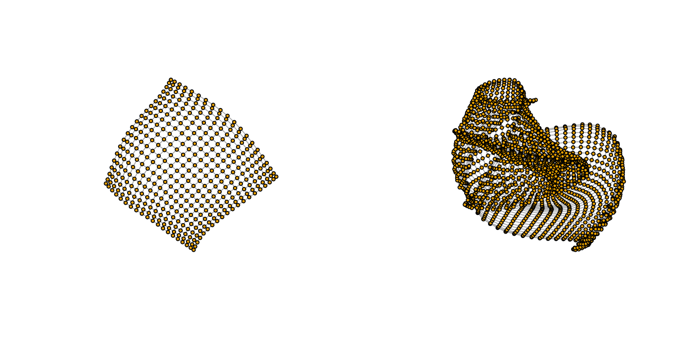

PreComputedProps.RmdIn many situations there may be a need to pursue the network comparisons from pre-computed counts/features. Working from pre-computed features decreases the computational time to obtain results, particularly when the same networks are involved in multiple and subsequent comparisons, or when the same properties are used in other procedures. Similarly, advance users, could consider using other sets of pre-computed features, particularly for NetEmd.
This vignette follows similar examples as “Simple and quick (default) usage 1: pairwise comparisons”. However, this vignette shows the steps required to obtain counts/features and then how to use them in the network comparison methods.
For other vignettes in this package see the “Menu”.
The following sections show how to extract the subgraph counts, or other relevant features prior to running NetEmd or Netdis. Then it shows how to call NetEmd or Netdis using the pre-computed features.
NetEmd and Netdis use subgraph counts, however, NetEmd takes counts directly from the observed graph. Netdis takes counts from ego-networks of the observed graph. The following example shows how the counts are extracted for NetEmd via count_orbits_per_node. The user can call NetEmd by directly providing the matrix of counts, or by providing a processed version of these counts via graph_features_to_histograms.
# Create lattice networks
gLat_1 <- igraph::graph.lattice(c(20,20))
gLat_2 <- igraph::graph.lattice(c(44,44))
par(mfrow=c(1,2))
plot(gLat_1,vertex.size=4,vertex.label=NA)
plot(gLat_2,vertex.size=4,vertex.label=NA)
The simple computation of NetEmd without pre-computed features:
netemd_one_to_one(graph_1=gLat_1,graph_2=gLat_2,feature_type="orbit",smoothing_window_width = 1)
#> [1] 0.08389459
counts_1= count_orbits_per_node(graph = gLat_1,max_graphlet_size = 5)
counts_2= count_orbits_per_node(graph = gLat_2,max_graphlet_size = 5)
head(counts_1[,1:4])
#> O0 O1 O2 O3
#> [1,] 2 4 1 0
#> [2,] 3 6 3 0
#> [3,] 3 7 3 0
#> [4,] 3 7 3 0
#> [5,] 3 7 3 0
#> [6,] 3 7 3 0
netemd_one_to_one(dhists_1=counts_1, dhists_2=counts_2,smoothing_window_width = 1)
#> [1] 0.08389459
dhists_1<- graph_features_to_histograms(features_matrix = counts_1)
dhists_2<- graph_features_to_histograms(features_matrix = counts_2)
netemd_one_to_one(dhists_1=dhists_1, dhists_2=dhists_2,smoothing_window_width = 1)
#> [1] 0.08389459Computation of the Laplacian and Normalized Laplacian:
# Networks
gLat_1 <- graph.lattice(c(20,20))
gLat_2 <- graph.lattice(c(44,44))
#Laplacian
Lapg_1 <- igraph::laplacian_matrix(graph = gLat_1,normalized = FALSE,sparse = FALSE)
Lapg_2 <- igraph::laplacian_matrix(graph = gLat_2,normalized = FALSE,sparse = FALSE)
#Normalized Laplacian
NLapg_1 <- igraph::laplacian_matrix(graph = gLat_1,normalized = TRUE,sparse = FALSE)
NLapg_2 <- igraph::laplacian_matrix(graph = gLat_2,normalized = TRUE,sparse = FALSE)
# Providing a matrix of network features (e.g. Spectra). (This may take a couple of minutes).
spec_1 <- cbind(L.Spectra= eigen(Lapg_1)$values, NL.Spectra= eigen(NLapg_1)$values)
spec_2 <- cbind(L.Spectra= eigen(Lapg_2)$values, NL.Spectra= eigen(NLapg_2)$values)
head(spec_1)
#> L.Spectra NL.Spectra
#> [1,] 7.950753 2.000000
#> [2,] 7.877490 1.993354
#> [3,] 7.877490 1.993354
#> [4,] 7.804226 1.986361
#> [5,] 7.757390 1.973633
#> [6,] 7.757390 1.973633Similarly to counts, all other features can be given as a matrix or as dhist objects:
netemd_one_to_one(dhists_1 = spec_1,dhists_2 = spec_2, smoothing_window_width = 0)
#> [1] 0.01280812
# Providing pre-computed dhist objects from network features
dhists_1<- graph_features_to_histograms(spec_1)
dhists_2<- graph_features_to_histograms(spec_2)
netemd_one_to_one(dhists_1=dhists_1, dhists_2=dhists_2, smoothing_window_width = 0)
#> [1] 0.01280812Netdis uses counts from the resulting ego-networks of each of the nodes in a graph, but it also considers the mean or expectation of these ego-network counts (\(E_w\)). The following example shows how the user can compute and provide the properties required from each graph as well as any relevant property required to calculate \(E_w\). The main properties can be obtained by means of count_graphlets_ego.
The selection of a gold-standard graph as a substitute for \(E_w\) could be done when such graph is known to be a good proxy for \(E_w\), or alternatively as a good reference point for the comparison. This option will focus on detecting discrepancies between the networks relative to the ego-network structure of the reference network / gold-standard graph and which is summarized in \(E_w\).
# Set source directory for virus protein-protein interaction edge files stored in the netdist package.
source_dir <- system.file(file.path("extdata", "VRPINS"), package = "netdist")
# Load query graphs as igraph objects
graph_1 <- read_simple_graph(file.path(source_dir, "EBV.txt"),format = "ncol")
graph_2 <- read_simple_graph(file.path(source_dir, "ECL.txt"),format = "ncol")For illustration purposes consider the lattice networks as possible gold-standard networks:
# Lattice graphs to be used as gold-standard as a reference point comparison
goldstd_1 <- igraph::graph.lattice(c(20,20)) #Graph with 8^2 nodes
goldstd_2 <- igraph::graph.lattice(c(44,44)) #Graph with 44^2 nodesNow obtain the subgraph counts for all networks.
# Providing pre-calculated subgraph counts.
props_1 <- count_graphlets_ego(graph = graph_1)
props_2 <- count_graphlets_ego(graph = graph_2)
props_goldstd_1 <- count_graphlets_ego(graph = goldstd_1)
props_goldstd_2 <- count_graphlets_ego(graph = goldstd_2)Compute Netdis using the pre-computed counts and any of the example gold-standard networks.
netdis_one_to_one(graphlet_counts_1= props_1,graphlet_counts_2= props_2, graphlet_counts_ref = props_goldstd_1)
#> netdis3 netdis4
#> 0.1405770 0.2507667
netdis_one_to_one(graphlet_counts_1= props_1,graphlet_counts_2= props_2, graphlet_counts_ref = props_goldstd_2)
#> netdis3 netdis4
#> 0.1401654 0.2505384Comparison to the result of Netdis without pre-computed counts.
# Netdis using the goldstd_1 graph as gold-standard reference point
netdis_one_to_one(graph_1= graph_1, graph_2= graph_2, ref_graph = goldstd_1)
#> netdis3 netdis4
#> 0.1405770 0.2507667
# Netdis using the goldstd_2 graph as gold-standard reference point
netdis_one_to_one(graph_1= graph_1, graph_2= graph_2, ref_graph = goldstd_2)
#> netdis3 netdis4
#> 0.1401654 0.2505384This Netdis variant focuses on detecting more meso-level discrepancies between the ego-network structures.
# Set source directory for Virus protein-protein interaction edge files stored in the netdist package.
source_dir <- system.file(file.path("extdata", "VRPINS"), package = "netdist")
# Load query graphs as igraph objects
graph_1 <- read_simple_graph(file.path(source_dir, "EBV.txt"),format = "ncol")
graph_2 <- read_simple_graph(file.path(source_dir, "ECL.txt"),format = "ncol")
# Netdis using the Geometric-Poisson approximation as a way to obtain background expectations.
netdis_one_to_one(graph_1= graph_1, graph_2= graph_2, ref_graph = NULL)
#> netdis3 netdis4
#> 0.8822527 0.1892716
# Providing pre-calculated subgraph counts.
props_1 <- count_graphlets_ego(graph = graph_1)
props_2 <- count_graphlets_ego(graph = graph_2)
netdis_one_to_one(graphlet_counts_1= props_1,graphlet_counts_2= props_2, ref_graph = NULL)
#> netdis3 netdis4
#> 0.8822527 0.1892716Comparing the networks via their observed ego counts without centring them, (equivalent to using expectation equal to zero). This variant focuses on detecting small discrepancies between the networks.
# Set source directory for Virus protein-protein interaction edge files stored in the netdist package.
source_dir <- system.file(file.path("extdata", "VRPINS"), package = "netdist")
# Load query graphs as igraph objects
graph_1 <- read_simple_graph(file.path(source_dir, "EBV.txt"),format = "ncol")
graph_2 <- read_simple_graph(file.path(source_dir, "ECL.txt"),format = "ncol")
#Netdis using no expectations (or equivalently, expectation equal to zero).
netdis_one_to_one(graph_1= graph_1, graph_2= graph_2, ref_graph = 0)
#> netdis3 netdis4
#> 0.00761545 0.02106628
# Providing pre-calculated subgraph counts.
props_1 <- count_graphlets_ego(graph = graph_1)
props_2 <- count_graphlets_ego(graph = graph_2)
netdis_one_to_one(graphlet_counts_1= props_1,graphlet_counts_2= props_2, ref_graph = 0)
#> netdis3 netdis4
#> 0.00761545 0.02106628W. Ali, T. Rito, G. Reinert, F. Sun, and C. M. Deane. Alignment-free protein interaction network comparison. Bioinformatics, 30:i430–i437, 2014.
L. Ospina-Forero, C. M. Deane, and G. Reinert. Assessment of model fit via network comparison methods based on subgraph counts. Journal of Complex Networks, page cny017, August 2018.
A. E. Wegner, L. Ospina-Forero, R. E. Gaunt, C. M. Deane, and G. Reinert. Identifying networks with common organizational principles. Journal of Complex networks, 2017.
F. Picard, J.-J. Daudin, M. Koskas, S. Schbath, and S. Robin. Assessing the exceptionality of network motifs. Journal of Computational Biology, 15(1):1–20, 2008.